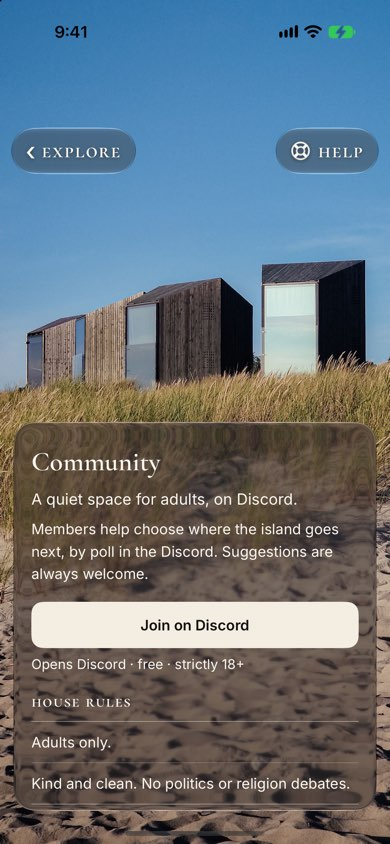
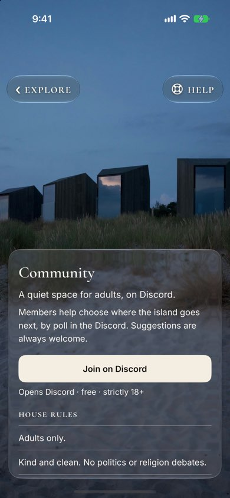

A quiet space for adults, on Discord. It is optional, and the app works fully without it.


What it is
A sobriety-focused room on Discord, run by Urge Walk. Members help choose where the island goes next, by poll in the Discord. Suggestions are always welcome.
Adults only
Strictly 18 and older. Urge Walk is for adults, and so is its Discord.
House rules
- Adults only.
- Be kind and keep it clean. No politics or religion debates.
- Stay sobriety-focused. No glorifying use, and no sharing where to get it.
- No sexual talk or images.
- Zero tolerance for predatory behavior.
Join
Opens Discord · free · strictly 18+
Discord has its own terms and its own privacy policy, and they apply once you leave this site or the app. Urge Walk shares nothing with Discord. The Privacy Policy says more.
The community is not a crisis service. If you need help now, see Help.